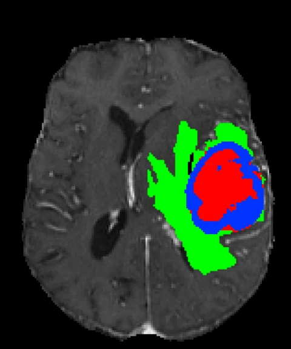
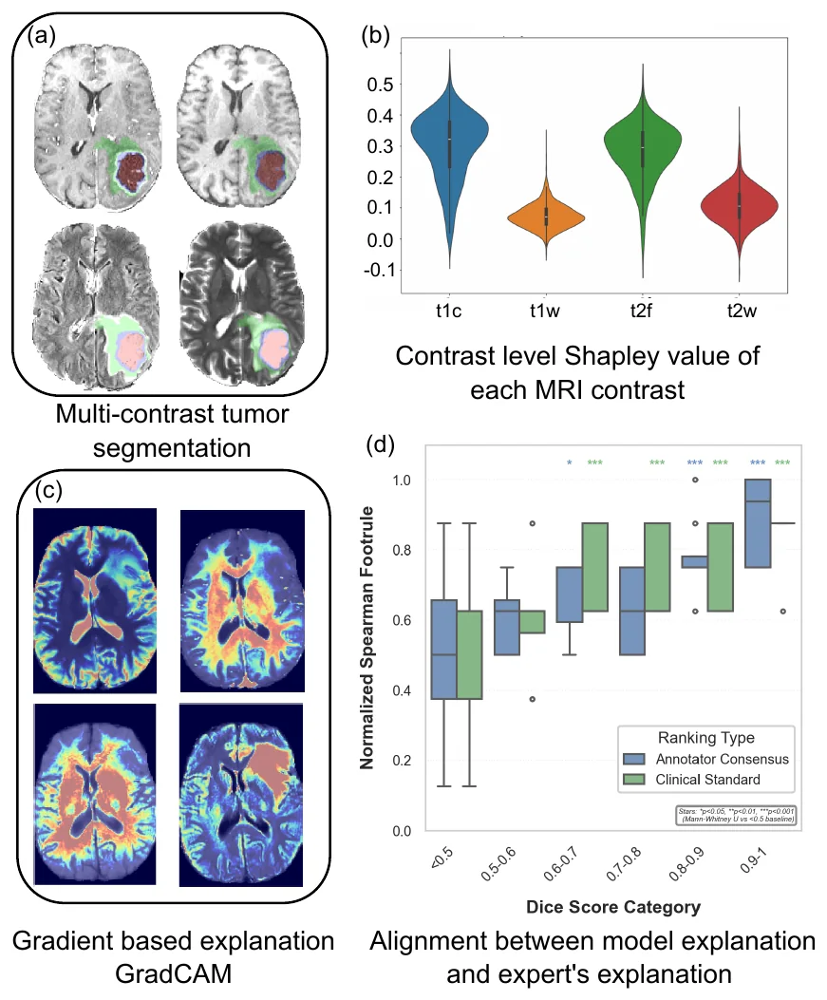
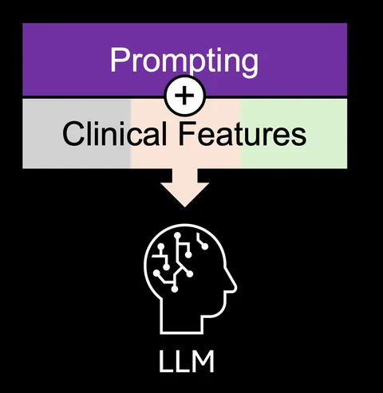

Tianyi Ren
Postdoctoral Scholar
Department of Mechanical Engineering
University of Washington
Member of the Kurt Lab with Prof. Mehmet Kurt
Research focus
Clinically deployable, trustworthy neuroimaging AI bridging algorithms with real-world needs
I am a postdoctoral scholar in Mechanical Engineering at the University of Washington, working with Prof. Mehmet Kurt. I build AI for neuroimaging that clinicians can use and trust: lesion segmentation for glioblastoma and ischemic stroke, regional brain-age estimation, and explainable AI that aligns model reasoning with clinical reasoning.
I received my Ph.D. and M.S. in Mechanical Engineering & Mechanics from Lehigh University, advised by Prof. Hannah Dailey, where I built mechanoregulation and image-based models of bone fracture healing, and my B.S. in Mechanical Engineering and Manufacturing from Southwest Jiaotong University.
Highlights
-
1st place
ISLES’24 Challenge · MICCAI 2024 Gold medal
Ischemic Stroke Lesion Segmentation Challenge, as team leader and first author. Clinically-informed preprocessing outperformed complex architecture changes.
How we won the ISLES’24 Challenge (arXiv) -
$310K
a2 Pilot Award · 2025–2026 · co-PI
Using explainable AI and deep learning for brain age prediction in older adults in clinical settings (PI: Kurt).
Brain-age research
- 10 peer-reviewed conference & workshop papers (2023–2026)
- 5 journal articles + 1 under review
- 4.6/5.0 teaching rating (BIS 285)
- Mentoring undergraduate, master’s, medical and Ph.D. students
Research
Research overviewOverarching goal
Merge advanced neuroimaging and multi-modal AI tools for the in vivo, subject-specific investigation of brain-related disease.
Models that excel on benchmarks often struggle with heterogeneous, real-world clinical data, and they offer limited interpretability and little clinical reasoning. My work addresses that translational gap in three connected thrusts.
-
A. Next-generation neuroimaging AI tools
Clinically-aware lesion segmentation for glioblastoma and ischemic stroke, and global and regional brain-age estimation from structural MRI that shows how an individual’s aging deviates from population norms.
- A1 · Segment the lesion
- A2 · Quantify the aging

-
B. Trustworthy neuroimaging AI
Contrast-level Shapley explanations for multi-contrast segmentation, and agreement and uncertainty metrics, developed with radiologists, that indicate when clinicians can trust a model’s output.
- B1 · Explaining segmentation

-
C. Responsible generative AI for clinical application
Counterfactual generative models that forecast brain-aging trajectories, and natural-language explanations of what medical image models see.
Future direction- C1 · Forecasting brain-aging trajectories
- C2 · Natural-language explanations

Selected publications
-
MIDL 2026
Can You Trust Your Model? Constructing Uncertainty Approximations Guaranteeing Validity of Glioma Segmentation Explanations
Medical Imaging with Deep Learning (MIDL), 2026
-
XAI 2025
Here Comes the Explanation: A Shapley Perspective on Multi-contrast Image Segmentation
World Conference on eXplainable Artificial Intelligence (XAI), 2025
-
MICCAI 2024 Workshop
How We Won the ISLES’24 Challenge by Preprocessing
Stroke Workshop, MICCAI 2024
- ISLES’24 · 1st place
- arXiv: How We Won the ISLES’24 Challenge
-
MIDL 2024
Re-DiffiNet: Modeling Discrepancies in Tumor Segmentation Using Diffusion Models
Medical Imaging with Deep Learning (MIDL), 2024
- Oral
- arXiv: Re-DiffiNet
-
J Orthop Res 2024
Torsion Constants and Virtual Mechanical Tests are Valid Image-Based Surrogate Measures of Ovine Fracture Healing
Journal of Orthopaedic Research, 2024
News
Two papers at MIDL 2026: uncertainty-guaranteed explanations for glioma segmentation, and BTReport for radiology report generation.
Two papers at ISBI 2026: an Age-Delta-Correlation loss for brain-age bias, and Shapley-derived agreement and uncertainty metrics.
Awarded an a2 Pilot Award ($310K, co-PI) for explainable brain-age prediction in older adults.
Population Health Initiative pilot grant for equitable AI for stroke diagnosis (Kurt Lab).
Paper on clinically-informed stroke preprocessing for low-resource settings at the MIRASOL workshop, MICCAI 2025.
Presented Here Comes the Explanation at XAI 2025 in Istanbul.
Taught BIS 285, Seminar in Biology: Dealing with Data (rating 4.6/5.0).
Won 1st place (gold medal) in the ISLES’24 stroke lesion segmentation challenge at MICCAI 2024, Marrakesh.
Two papers at MIDL 2024 in Paris, including an oral presentation of Re-DiffiNet.